Guides d’équipement pour chat d’intérieur
Équiper ton chat d’appartement, sans tout acheter d’un coup
On compare les objets vraiment utiles en petit logement : bruit, encombrement, budget et sécurité. Des guides concrets pour protéger le canapé, limiter les odeurs et faciliter les journées hors de chez toi.
Pas de promesse miracle, pas d’avis vétérinaire déguisé. Juste des critères pour bien choisir.

Des cas réels d’appartement
On part du studio, du canapé, du balcon et du rythme de la semaine, pas d’une fiche marketing.
Des critères utiles
Taille, bruit, entretien, coût sur la durée. Si une donnée n’est pas claire, on le dit.
Des liens transparents
Certains liens Amazon sont affiliés. Une mention le rappelle en bas d’article, sans en faire un bandeau.
Les guides
Chaque fiche aide à choisir un équipement précis, avec des exemples concrets pour la vie en intérieur. Les plus récents apparaissent en premier.

Caisse de transport
Caisse rigide, sac souple ou sac à dos : le bon modèle pour la voiture, le métro ou le véto.
Griffoir pour chat
Mural, carton incliné ou poteau en sisal : lequel pour protéger ton canapé.
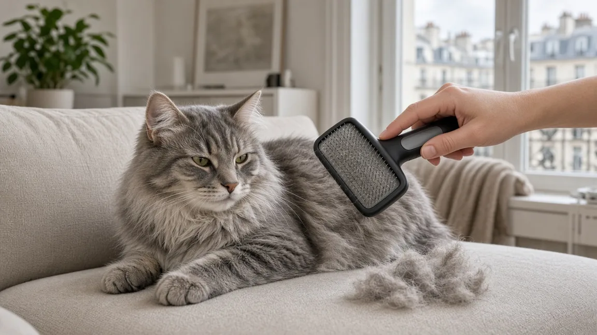
Brosse pour chat
Moins de poils sur le canapé : brosse, gant ou peigne, selon le pelage.
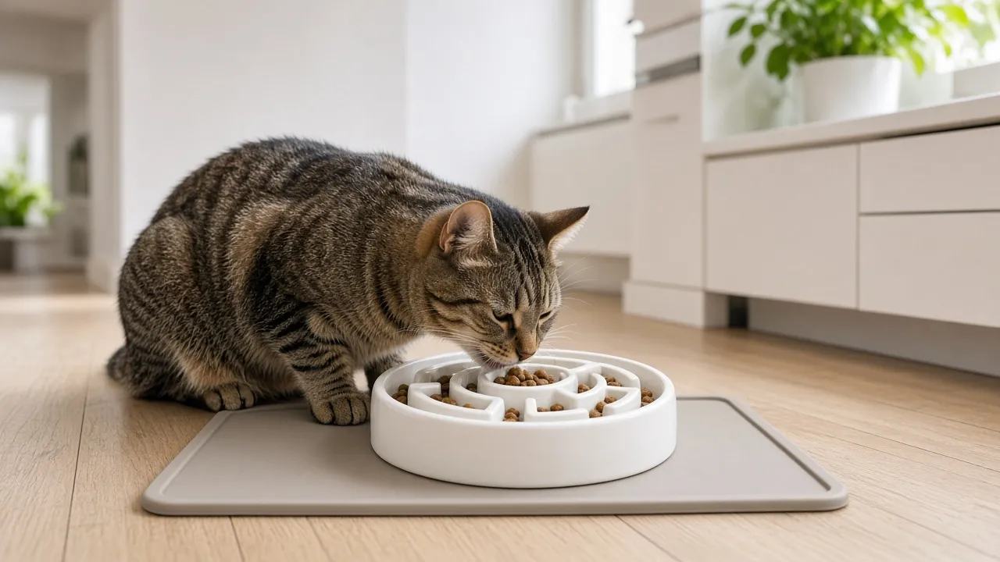
Gamelle anti-glouton
Labyrinthe, tapis de léchage ou gamelle surélevée pour ralentir les repas.
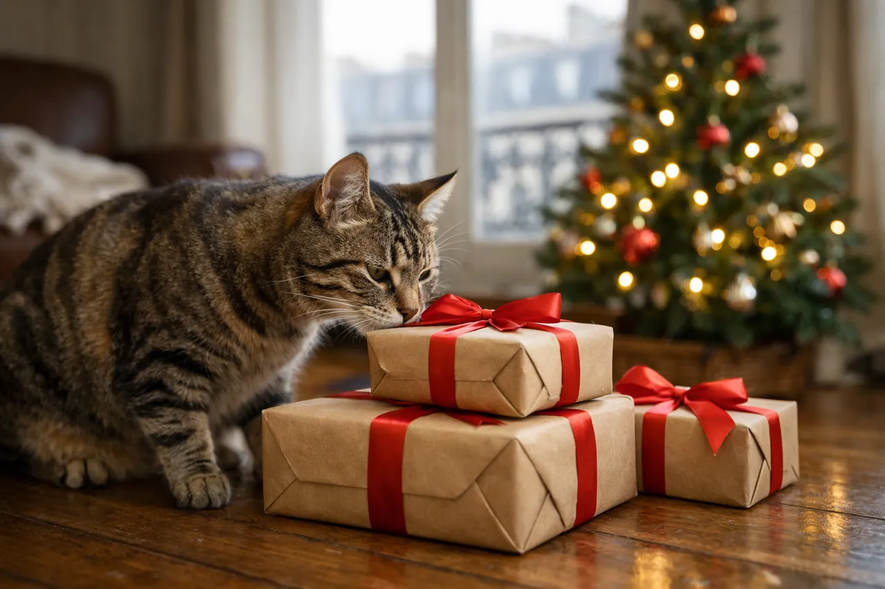
Cadeau de Noël pour chat
Hamac de fenêtre, tunnel, coussin : des idées utiles en intérieur.
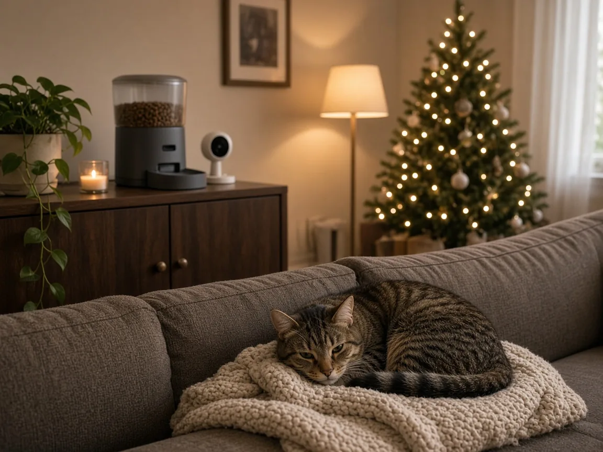
Chat seul à Noël
Kit pour 3 à 7 jours, visites à prévoir et checklist de départ.

Tapis de litière
Limiter les grains qui voyagent dans tout l’appartement.
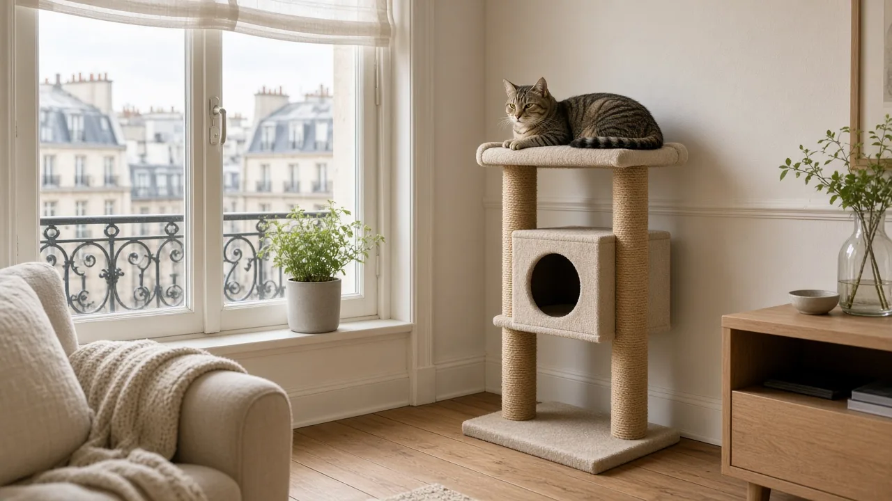
Arbre à chat petit appart
Modèle compact, étagères murales ou griffoir : gagner de la hauteur.

Filet balcon
Filet, poteaux sans perçage ou grille de fenêtre : sécuriser le balcon.

Jouet interactif
Balle, laser ou plume automatique pour les moments où tu n’es pas là.

Kit débutant & budget
Trois niveaux de budget pour équiper ton chat sans tout acheter d’un coup.

Litière chat appart
Les critères qui comptent : taille, Wi-Fi, entretien, poids du chat.
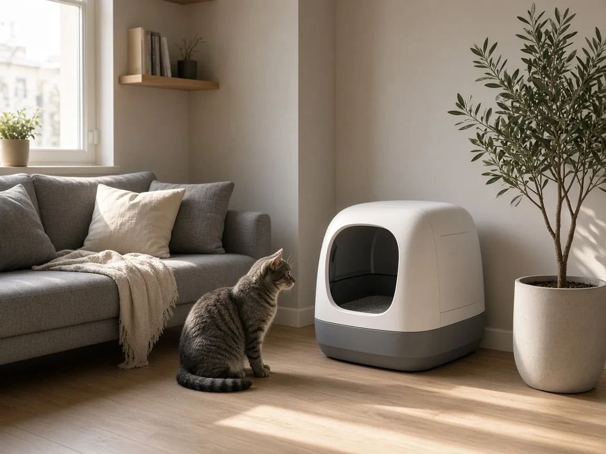
Litière petit appart
Bruit, encombrement et odeurs quand on manque de place.
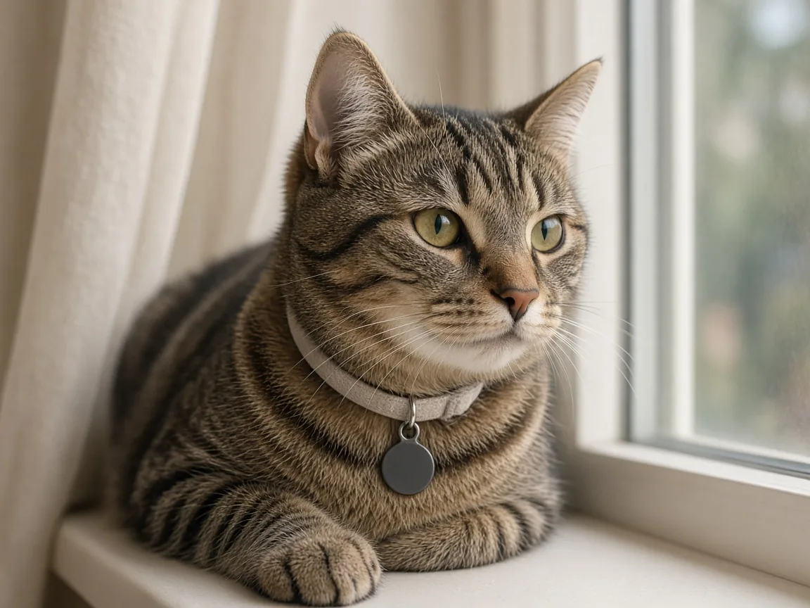
GPS sans abonnement
Ce qu’un vrai GPS exige, et les alternatives sans frais mensuels.

Caméra à friandises
Caméra avec lanceur : utile pour jouer à distance, ou trop de gadget.

Caméra chat
Voir ton chat en journée, sans tout miser sur un abonnement cloud.
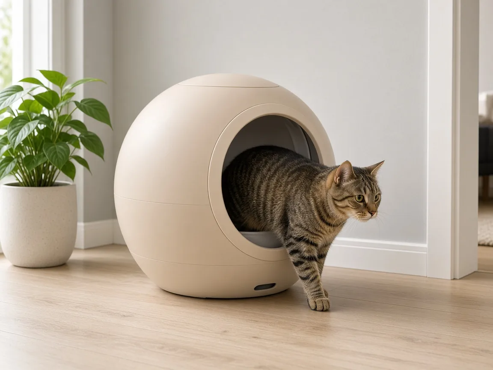
Litter-Robot 4 : avis
Pour qui ça vaut le coup, et quels frais prévoir sur la durée.
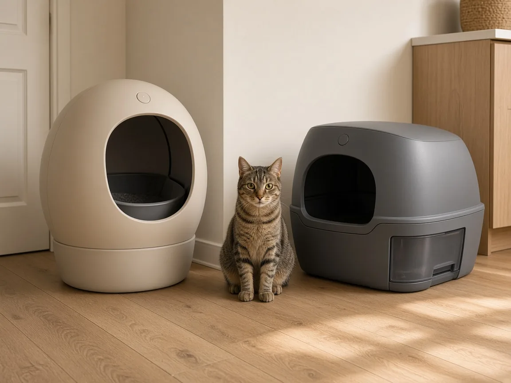
Litter-Robot 4 vs PetKit
Globe haut de gamme ou modèle plus compact : le duel point par point.

Distributeur connecté
Programmer les repas quand tu rentres tard, sans te tromper de modèle.

Fontaine à eau
Capacité, entretien, bruit de pompe : laquelle adopter en appartement.
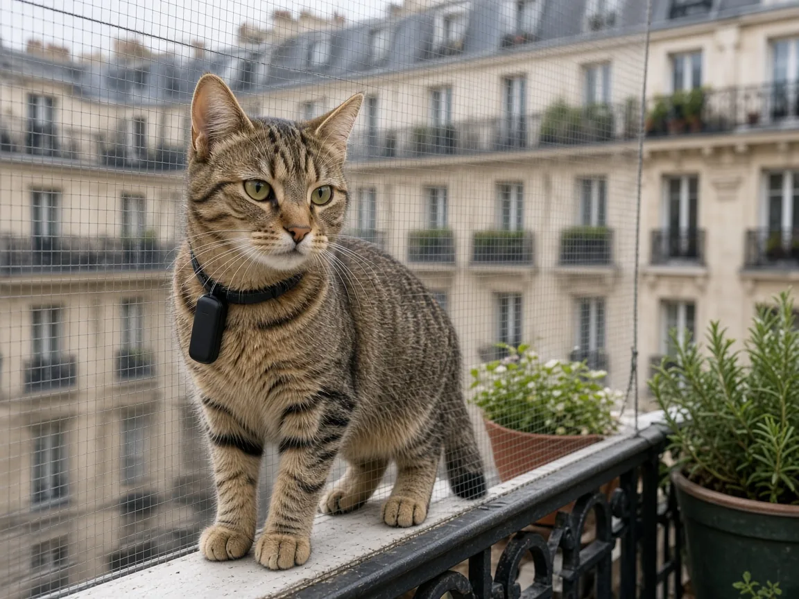
GPS chat
Suivi en temps réel ou repérage de proximité : comment choisir.
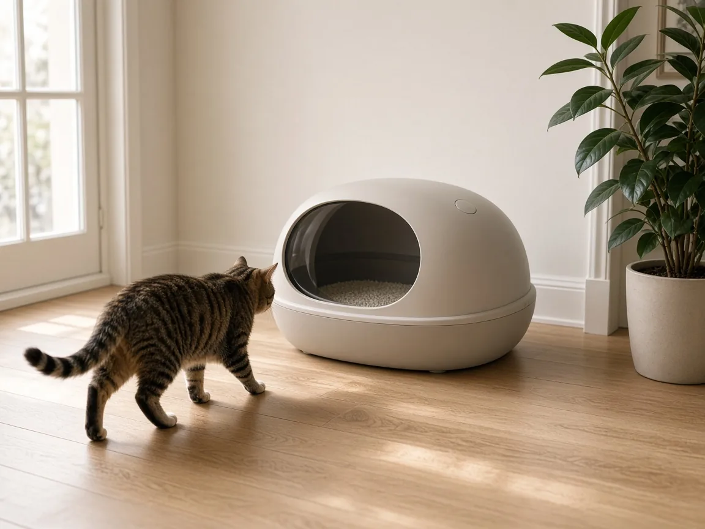
Litière automatique
Litter-Robot, PetKit et alternatives : bruit, taille, coût d’usage.
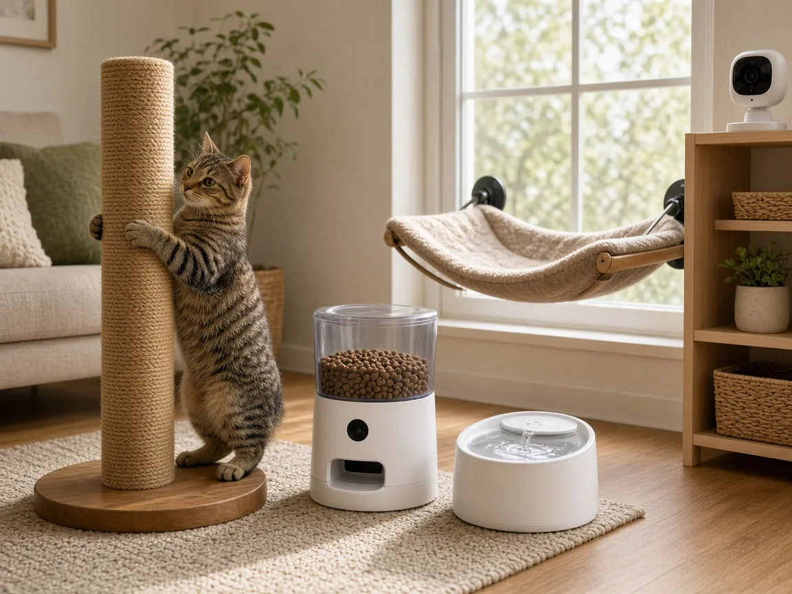
Top 5 équipements 2026
Cinq équipements utiles, dans un ordre d’achat raisonnable.
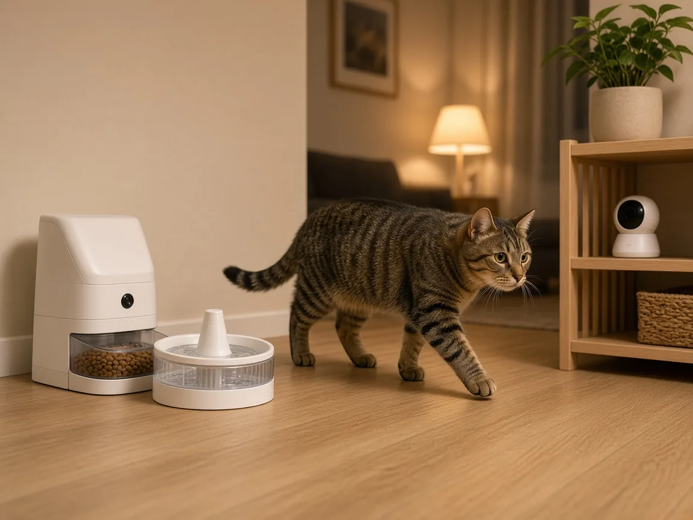
Objets connectés chat
Litière, fontaine, distributeur, GPS, caméra : ce qui change vraiment le quotidien.

Équipement chat appart
La checklist complète : indispensable, utile ou superflu en appartement.
Par où commencer ?
- Ton chat griffe le canapé : notre guide griffoir pour chat d’appartement (griffoir mural, carton incliné, poteau en sisal).
- Tu pars pour les fêtes : notre guide chat seul en appartement pendant les vacances de Noël (kit pour 3 à 7 jours, visites à prévoir, checklist de départ).
- Trop de poils sur le canapé : notre guide brosse pour chat d’appartement (brosse autonettoyante, gant de toilettage, peigne et démêlage).
- Ton chat mange trop vite : notre guide gamelle anti-glouton pour chat d’appartement (labyrinthe, tapis de léchage, gamelle surélevée).
- Tu cherches un cadeau pour ton chat : nos idées de cadeau de Noël pour chat d’appartement (hamac de fenêtre, tunnel pliable, coussin autochauffant).
- Tu accueilles un chat ou tu fais le point : notre checklist complète de l’équipement pour chat d’appartement (indispensable, utile, superflu).
- Tu découvres le sujet : notre panorama des objets connectés pour chat (litière, fontaine, distributeur, GPS, caméra) et l’ordre d’achat conseillé.
- Tu veux l’essentiel en une page : notre Top 5 des équipements pour chat d’appartement 2026.
- Tu travailles de longues journées : commence par le distributeur de croquettes connecté et la fontaine à eau.
- L’odeur de litière envahit le studio : lis notre guide des litières automatiques, puis le duel Litter-Robot 4 vs PetKit.
- Ton chat a accès au balcon ou s’échappe parfois : compare Tractive et AirTag, ou vois les options de GPS sans abonnement.
- Tu hésites sur une litière automatique : notre guide d’achat litière automatique chat appartement (bruit, odeur, taille, Wi-Fi).
- Tu vis dans un studio : notre guide litière automatique en petit appartement (bruit, taille, odeurs).
- Tu veux voir ton chat en journée : notre guide caméra de surveillance pour chat.
- Tu hésites à investir dans le haut de gamme : notre avis Litter-Robot 4 (2026) et notre guide caméra chat avec lanceur de friandises (Furbo, Petcube).
- Ton chat profite du balcon ou des fenêtres ouvertes : notre guide filet de protection balcon pour chat (filet, poteaux sans perçage, grille de fenêtre).
- Ton chat griffe le canapé ou grimpe partout : notre guide arbre à chat pour petit appartement (arbre compact, étagères murales, griffoir en carton).
- Les grains de litière se baladent dans tout l’appartement : notre guide tapis de litière pour chat (nid d’abeille, silicone à rebords, grand tapis texturé).
- Ton chat s’ennuie quand tu es absent : notre guide jouet interactif automatique pour chat d’appartement (balle, laser, plume).
- Tu débutes et tu veux maîtriser le budget : notre kit débutant chat connecté.
À propos
Chat Appartement Connecté publie des guides pour la vie d’un chat en intérieur : confort, litière, repas, sécurité. Les textes s’appuient sur les fiches des fabricants, les retours d’usage et les contraintes d’un vrai appartement.
Ces guides ne remplacent pas l’avis d’un vétérinaire.
Lire la page À proposL’audit gratuit en 1 jour
Audit gratuit : repère en 1 jour ce qui manque à ton chat d’appartement. Reçois le PDF par email.
Liens affiliés Amazon : une commission peut être versée, sans surcoût pour toi.